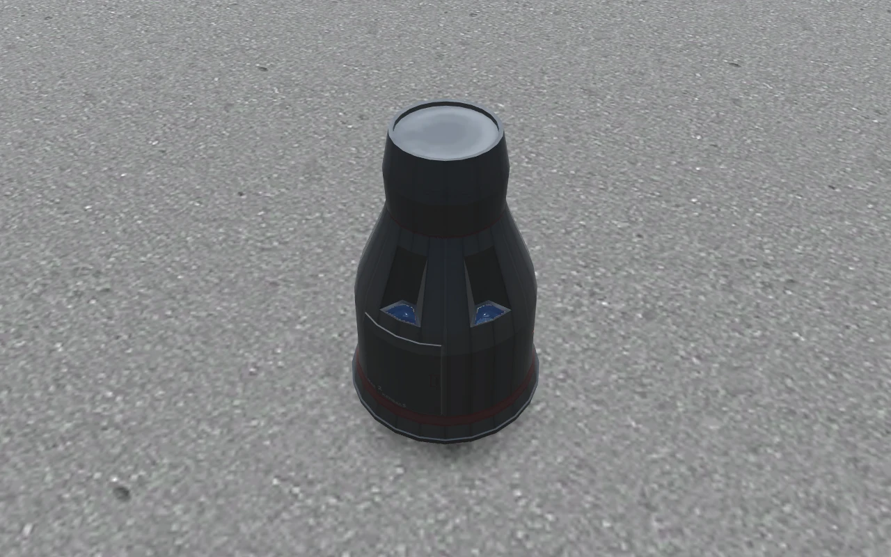
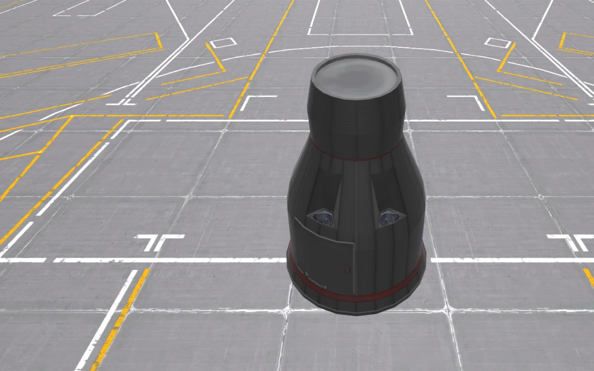
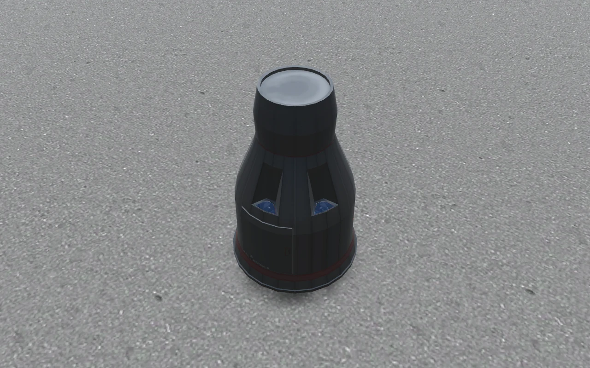

ShineFix home
← Back to supported mods
K2 Command Pod Continued
Optics verified
Human tested
Version 1.1.11.1
Compatibility evidence
Original screenshot gallery
Parts
K2 Command Pod

K2 Expanded Command Pod (1.875m)

